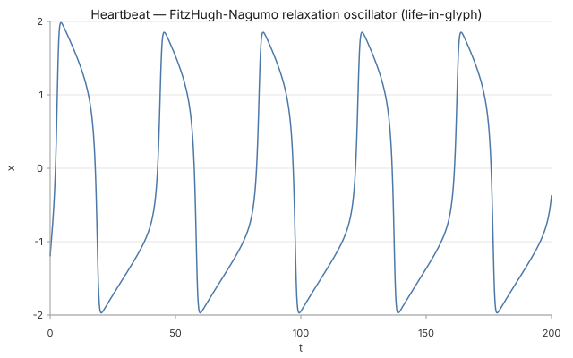
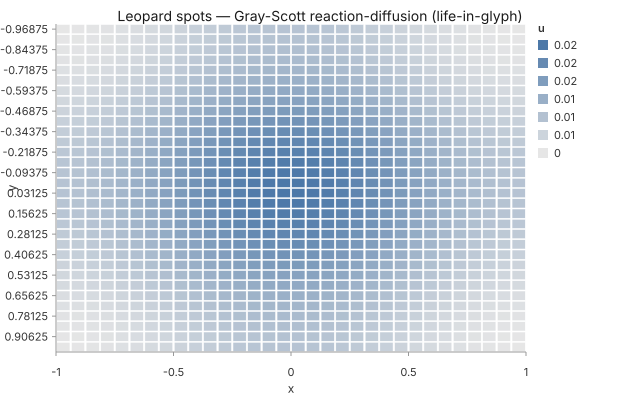
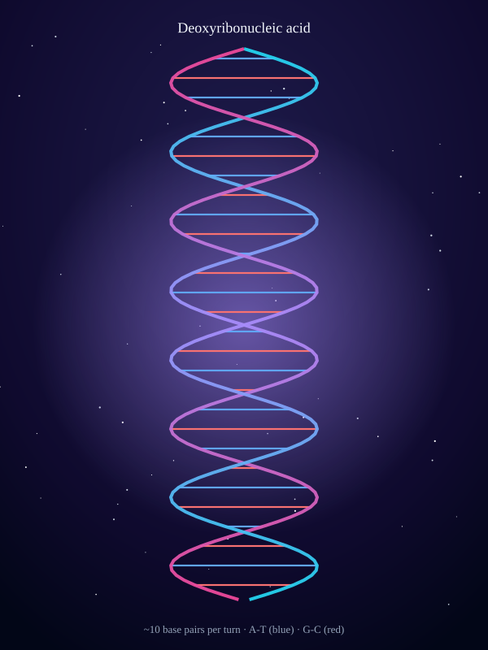
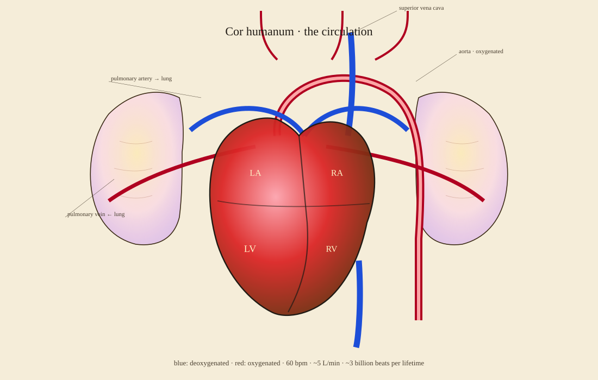
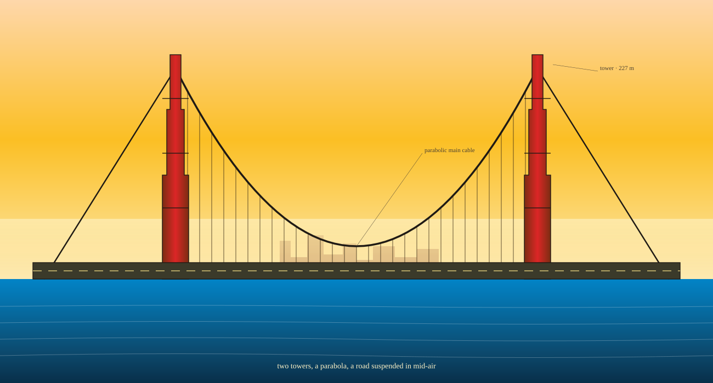
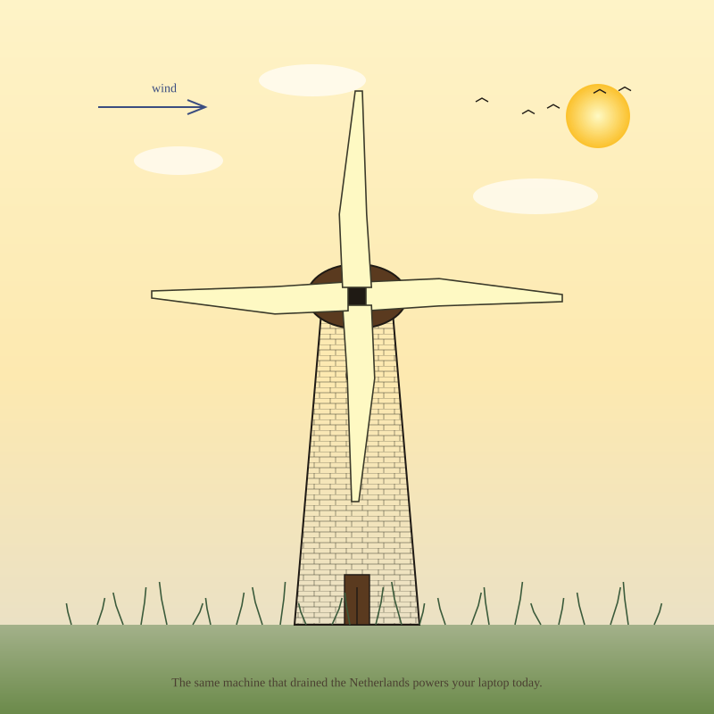
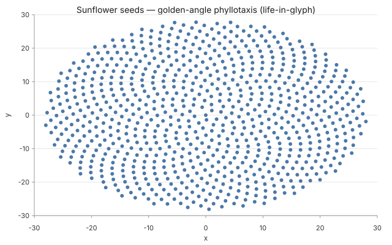
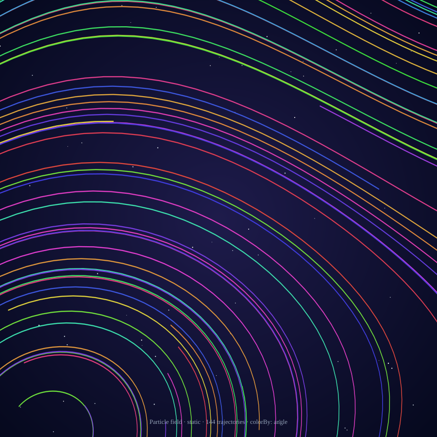

Glyph is a 2D SVG renderer. Setting aside the things it doesn't do — real-time GPU, 3D, dashboards, network graphs — here are the five non-chart capabilities where it genuinely wins. Each one with two examples.
Most viz tools optimize for one thing: plotting data. Glyph does that too, but it isn't where Glyph is most distinctive. The interesting question is the inverse — once you set aside bar charts and line plots, what does Glyph do that nothing else does as well?
This essay answers that question by walking through the five capabilities, in order of how unique they are. Each chapter pairs a one-paragraph argument with two rendered examples. The aim is not to claim Glyph is best at everything; the closing table lists exactly the things it isn't.
I.
Algorithm-driven math visualization
You describe the equation, not the data. Glyph integrates and renders in one pass.
Almost no other declarative viz tool integrates ODEs and PDEs inside the renderer. Vega and Plotly expect pre-computed data; you write Python or JavaScript first, then plot. Glyph collapses that into one JSON spec. data.shape: "trajectory" takes dxdt and dydt as math expressions and runs RK4 to produce the curve. data.shape: "pde-solve" does the same for the heat equation, the wave equation, or Gray-Scott reaction-diffusion.
This matters most when the equation is the thing you're trying to teach — a physiology trace, a phyllotaxis, a Wankel rotor's kinematics. The math is what you write down; the picture is what falls out.

FitzHugh-Nagumo heartbeat — two coupled ODEs (1961). 2000 RK4 steps integrate the relaxation oscillator into the spike-and-recover trace of a resting heart at 60 bpm. The data shape is the equation.

Gray-Scott reaction-diffusion — two chemicals U and V on a 32×32 grid (1952 Turing prediction, 1984 Gray-Scott parametrization). 400 finite-difference steps produce the leopard's coat from a single seed.
II.
Agent-native generation
One English prompt → one JSON spec → one byte-identical SVG. Survives the LLM-as-author transition cleanly.
Most viz tools were designed when humans typed code. Glyph was designed when humans type prompts. The JSON spec is small enough for an LLM to write end-to-end, Zod-validated so bad specs fail loudly, and the output is byte-identical across CI runs — meaning regression-testable like code. The Life in Glyph gallery is the proof: 21 pages now, the latest 16 generated by Claude from single English sentences.
Why this is rare: text-to-image tools (DALL-E, Midjourney) emit pixels that can't be diffed in git, edited in JSON, or regression-tested. Glyph emits a durable, inspectable artifact — the spec — alongside the picture.

DNA double helix — from the single prompt "draw me DNA, A-T blue, G-C red, against a starfield." Two phosphate strands sampled along sinusoids; rungs as polylines; 60-star LCG starfield; 4 gradients. One Claude turn, one byte-stable SVG.

Heart + circulation — from the prompt "anatomical heart with vessels and lungs, pencil-on-parchment, the heart should pulse." Pulse animation included. The agent picked the chamber positions, the vessel curves, and the SMIL period.
III.
Composable engineering schematics in pencil
A drafting-board aesthetic with a real schematic vocabulary. Looks like the 1930s shop drawings of the things it depicts.
Glyph ships with a tiny, opinionated visual voice: the pencil-parchment theme preset, the frame / gear / pendulum / annotation-leader schematic marks, and pattern fills (fluted columns, hatched fluid, marble, stone-block, photovoltaic cells). The combination produces drawings that read as actual engineering elevations, not chart-library output.
This is a deliberately narrow capability. It's exactly what you want for textbook chapters, museum panels, engineering documentation. It's not what you want for a startup dashboard. The aesthetic is the feature.

4-6-2 Pacific class steam locomotive — full anatomy: smokebox with rivets and a "4-6-2" builder's plate, cylindrical boiler with 6 brass bands, steam dome + sand dome + bell + whistle, brass side rod linking 3 drivers, pilot truck + trailing axle + tender. The wheels are SMIL-rotating. Stevenson's Rocket (1829) → Mallard (1938, 203 km/h world record).

Golden Gate-style suspension bridge — art-deco stepped towers (three setbacks each), one parabolic main cable per side, 30 vertical suspenders dropping to a roadway with dashed centerline. A distant city silhouette fades into fog on the horizon. The cable hangs in a parabola because the load is uniform per horizontal distance — Roebling (1883) → Strauss (1937).
IV.
Composed animated dioramas
Multiple marks + loop animations + (optionally) an embedded chart, all in one declarative spec. The right shape for explanatory visualizations.
The diorama is the right shape for the kind of viz that pairs with text: a science explainer, a textbook figure, a museum panel. It needs more than a chart, less than a 3D scene. Glyph's compose grammar lets you combine schematic marks + decorative primitives + embedded charts + SMIL loop animations in a single JSON spec. The result moves when viewed in a browser, sits still when snapshotted in CI.
Most animation libraries (Lottie, GreenSock, Three.js) want hand-authored keyframes or imperative JavaScript. Glyph gives you one declarative animation block per child — pick rotate-loop, swing, or pulse, give it a period, done.

Solar-system orrery — six planets, six SMIL rotate-loop animations, periods scaled by real orbital years (Earth = 8 s, Saturn = ~3m55s). Asteroid belt deterministically placed; Saturn's ring co-rotates with the planet. What NASA Eyes does in 3D, Glyph does as a flat orrery.

Dutch tower mill — four blade polygons each on a rotate-loop at 8 s, plus a stone-pattern tower, a brown cap, sun + clouds + birds + grass tufts. Schematic mark + decorative primitives + loop animation, all in one compose spec.
V.
Byte-deterministic generative art
The aesthetic of generative art with the rigor of unit tests. Same seed → same pixels → snapshot-testable.
"Generative art" usually means "looks different every run." That's incompatible with snapshot testing, version control, and reproducible papers. Glyph's seed-driven generators — a Park-Miller LCG for the starfield mark, deterministic RK4 for trajectories, finite-difference PDE solvers, recurrence relations — give you the aesthetic of generative art with the rigor of unit tests.
The leopard spots, the sunflower seeds, the Physarum chemistry, the particle fields: byte-identical on every CI run, every platform, every Node version. The artwork is the spec; the SVG is its shadow.

Sunflower phyllotaxis — Vogel's 1979 model. Each seed n at radius √n and angle n·137.5° (the golden angle). 200 seeds → the only angle that fills a disc without leaving gaps. Pure recurrence; no Phyllotaxis trickery; same SVG every time.

Particle field — 144 RK4-integrated trajectories through an Arnold-Beltrami-Childress-flavored vector field. Each path colored by local flow angle. The signature of a million-particle GPU demo, drawn deterministically by integrating exactly 144 trajectories. See the recipe.
What's not in the top five
The list above is short because the list of things Glyph isn't for is longer. Reach for a different tool when you want any of these:
What you want
Why Glyph isn't it
Better tool
Generic charts (bar, line, scatter)
Commodity. Glyph has them but no advantage
Vega-Lite, Observable Plot
Interactive zoom, pan, brush
Render-once-declarative. No event model
D3, Plotly
3D scenes
Pure 2D SVG. No camera, no mesh, no lighting
Three.js, Deck.gl
Force-directed network graphs
No physics simulator; SVG node ceiling ~10k
D3-force, sigma.js
Geographic maps with tiles
No projection grammar, no tile server
Mapbox, Leaflet, D3-geo
Real-time particles (millions @ 60 fps)
SVG can't paint that many DOM nodes
regl, PixiJS, particle-love
Photo-realistic / pixel art
Vector output, not raster
DALL-E, Midjourney, Procreate
Hand-edited illustration
JSON-authored, not direct-manipulation
Figma, Inkscape
Multi-chart dashboards
64-child compose cap; SVG perf ceiling
Grafana, Observable
UML / ER / sequence diagrams
Doable but no optimized grammar
Mermaid, PlantUML, Graphviz
Where to use it
Reading the strengths back as use cases, six scenarios cover the bulk of where Glyph genuinely fits. None of these are revolutionary; they're the situations where Glyph's particular trade-offs — declarative, deterministic, 2D SVG, LLM-friendly — line up with the work.
i.
Textbook figures and lecture diagrams
Where the math is the point. Differential-equations textbooks need phase portraits and trajectories; reaction-diffusion needs heatmaps; geometry needs constructions; mechanisms need kinematic snapshots. Glyph compiles all four from a single grammar, and the same JSON spec the author writes is the figure that gets committed to the manuscript repository.
In the galleryJoy of Math — nine math demos including FitzHugh-Nagumo, sine-waves, sums, sqrt traces, hypotrochoid, gravity-lensing.
ii.
Engineering documentation and patent illustrations
Patent figures, mechanical-assembly diagrams, architectural elevations, schematic blueprints. The pencil-on-parchment aesthetic and the schematic vocabulary (frame, gear, pendulum, annotation-leader) are exactly the right shape for these. Think 1930s shop drawings, not generic chart-library output. The same spec produces the same drawing every time — important when the drawing is itself part of a regulated document.
Popular-science articles, Wikipedia illustrations, museum exhibit panels, conference posters. Pair a paragraph of text with one byte-stable SVG that renders on every device and survives every print run. The "Life in Glyph" series is built on this shape: an English-language prompt, a Glyph spec, a story told around a single image.
Online course modules, conference slide decks, embedded YouTube graphics, MOOC supplements. SMIL loop animations work in every modern browser without a single line of JavaScript. A planet orbits, a heart pulses, gears turn, blades rotate — described once in JSON, animated forever on the page. The orrery and windmill in this essay are the proof.
When a chat agent — an LLM tutor, a code assistant, a conversational analyst — needs to draw something on demand. The JSON spec is small enough for the agent to author end-to-end; Zod's schema errors give it a clear repair signal when it gets a comma wrong; the SVG output is durable enough to embed in chat history or cite in a downstream document. The entire "Life in Glyph" series above was authored this way, prompt by prompt.
Read the recipeParticles in Glyph — the 4-step playbook for prompting Glyph for a complex spec.
vi.
Procedural illustration pipelines
Generate N illustrations from N data rows, all reproducible: per-student educational figures, per-device datasheets, per-game sports diagrams, per-attendee conference badges, per-experiment science-paper supplements. Glyph is a pure function — pipe data in, get reproducible SVGs out. The byte-stability matters: if the same row produces the same picture today and a year from now, you can re-render archives without auditing every diff.
For exampleAn author runs generate-figures.mjs over their dataset; each row produces one named SVG; the next-print-run is byte-identical to the first.
The pattern in the top five — and the six scenarios above, and the contrast with the bottom ten — is the same idea: Glyph is for visualizations where the math, the schematic, or the composition is the durable artifact, and the SVG is its byte-stable shadow. Narrow but real. Pick the right tool for each job; this is what Glyph's tool is for.